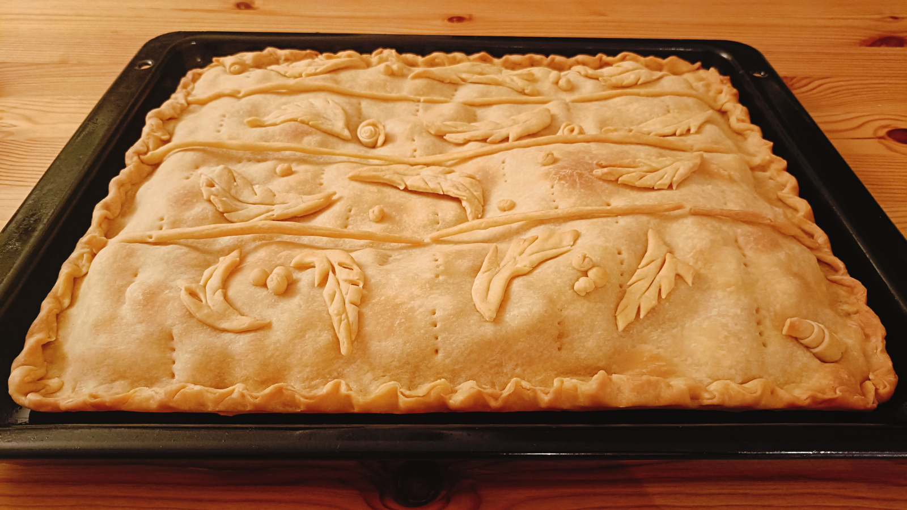

Empanada de Salmón
- Preparación: 30 - 40 min
- Cocción: 30 min
- Porciones: 1 empanada de 37 x 42 cm
INGREDIENTES
RELLENO
- 600 - 650 g de salmón crudo sin piel, sin espinas y picado
- 1 cebolla grande (aproximadamente 300 g) finamente picada
- 5 tomates medianos (600 g) de tomates finamente picados
- sal y pimienta al gusto
MASA
- 6 tazas (750 g) de harina de trigo de todo uso
- 1 taza (225 g) de aceite de girasol
- 1 taza (225 g) de leche
- 2 huevos ligeramente batidos
- ½ cucharada (10 g) de sal
BARNIZADO
- 1 huevo ligeramente batido
DESCRIPCIÓN
Uno de los platillos más perfectos que he probado. Esta empanada reúne de manera impecable algunos sabores que armonizan con la deliciosa carne del salmón. Hecha con muy pocos ingredientes, y con un nivel bajo de dificultad, esta empanada estilo gallega, sale de nuestra cocina como un regalo de amor para quien se aventure a cocinarla.
INSTRUCCIONES
- Para preparar la masa volcar la harina en un recipiente grande. Añadir la sal, leche, aceite y los huevos ligeramente batidos. Mezclar con las manos hasta formar un bola de masa suave. Dejarla dentro del recipiente cubierta con un paño de cocina mientras se prepara el relleno.
- Para preparar el relleno salpimentar primero el salmón crudo y reservar. Luego, en una sartén extendida verter un buen chorro de aceite de oliva y calentar a fuego medio. Una vez caliente, freír la cebolla picada hasta que se torne traslúcida (3 o 4 minutos aproximadamente). Después añadir el tomate picado y dejar que se cocine muy bien, removiendo constantemente por unos 15 minutos o hasta que los jugos del tomate se hayan casi secado, pero sin dejar que se torne pastoso. Salpimentar al gusto y retirar del fuego.
- Precalentar el horno a 195 °C (380 °F) y preparar una bandeja para hornear de 37 x 42 cm.
- Dividir la masa en 2 trozos, uno ligeramente mayor que el otro. El trozo menor será la base de la empanada y el mayor será para la tapa y los adornos. Extender el trozo menor con un rodillo sobre una superficie de trabajo ligeramente enharinada. Estirar hasta obtener un rectángulo de unos 2 o 3 mm de espesor y de tamaño suficiente para cubrir el molde donde se horneará la empanada.
- Cubrir el molde con la masa extendida con cuidado de centrarla bien y de no estirarla demasiado. Añadir los tomates cocinados en una capa uniforme sobre toda la superficie de la empanada. Después colocar encima el salmón crudo y previamente salpimentado en otra capa uniforme por encima de la capa de tomate. Reservar.
- Estirar el trozo mas grande de masa sobre la superficie limpia y enharinada de un tamaño que permita cubrir la empanada. Con las cantidades y tamaños sugeridos es muy probable que sobre bastante masa como para hacer decoraciones como las que se muestran en la fotografìa. El espesor de la tapa de la empanada también debe ser de unos 2 o 3 mm. Cerrar la empanada y hacer decoraciones con la masa sobrante.
- Barinzar la empanada con huevo batido y un pincel. Pinchar con un tenedor la superficie de la empanada para permitir que salgan los vapores y no se hinche demasiado.
- Hornear por unos 25 0 30 minutos o hasta que la empanada esté dorada al gusto. Sacar del horno y servir caliente.
Notas
- La empanada gallega, o las variaciones, como ésta, se pone más buena con el paso del tiempo, por lo que es buena idea almacenarla y comerla por los próximos dos o tres días posteriores a su preparación. Para recalentarla, sugiero usar el horno a 100 ° C por unos 15 minutos, cuidando que no se queme.
- El relleno fue invención mia, pero la masa es de La Cocina de Frabisa.